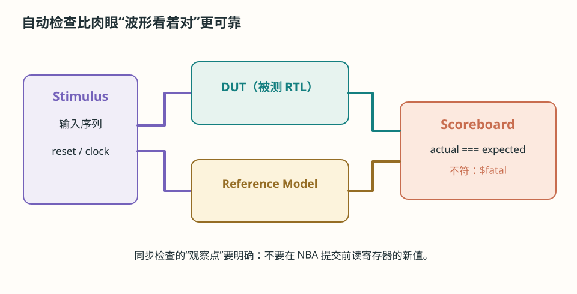
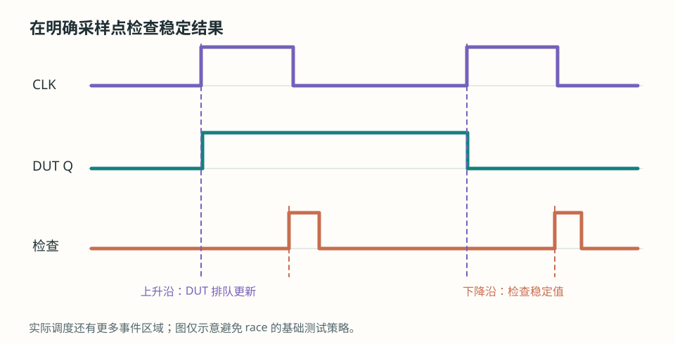

Testbench：让波形能够自动判定对错
从刺激源、独立参考模型与 Scoreboard，到事件调度竞态、协议断言、超时和自动化回归。
01 / 波形“看着对”，为什么仍然需要自动检查？
一个加法器能连续工作一千个周期，不代表 4'b1111 + 4'b0001 的溢出边界正确。单纯查看 VCD 波形很难保证每次回归都检查所有输入；testbench 应以明确的期望值来判定通过或失败。

测试台（testbench）通常不参与综合，因而可使用 initial、#delay、$display、$fatal、$dumpvars 等仿真特有功能。被测模块（DUT）应尽可能使用标准可综合 RTL，避免将测试台便利语法误搬到硬件实现中。
建议把测试分为：激励（输入组合与协议时序）、参考行为（与 DUT 实现独立）、采样点（避免仿真调度竞态）、判定（fail 时返回非零退出码）、覆盖与局限（哪些情况尚未检查）。
02 / 同一上升沿不能随意读 NBA 后的新值
时钟过程里的非阻塞赋值先计算 RHS，随后在 NBA 队列提交寄存器新值。若 testbench 在 @(posedge clk) 立刻比较 q，它可能读到旧值，而不是 DUT 的错误。

reg clk = 0;
always #5 clk = ~clk;
// 先在下降沿驱动数据
@(negedge clk);
din = 1'b1;
// 经过上升沿寄存，下一下降沿检查
@(negedge clk);
if (q !== 1'b1) $fatal(1, "DFF mismatch");本策略不是“下降沿检查才合法”：SystemVerilog clocking block、程序块与更细粒度的事件区机制都可以提供确定性驱动/采样约束。对于 Verilog-2005 教学示例，用明确不同的边沿通常更容易理解。
03 / 自检验参考模型与边界用例
以 4 位 ALU 为例，既要验证 1024 种 16×16×4 输入组合，又要确认加法 carry 是无符号进位，不是带符号 overflow。参考模型尽量使用独立、简洁的数学表达，以减少复制 DUT 错误的风险。
// 下面是 testbench 中的一段参考运算
reg [4:0] expected_sum;
reg [3:0] expected_result;
reg expected_carry;
expected_sum = {1'b0, a} + {1'b0, b};
expected_carry = 1'b0;
case (op)
2'd0: begin
expected_result = expected_sum[3:0];
expected_carry = expected_sum[4];
end
2'd1: expected_result = a & b;
2'd2: expected_result = a ^ b;
2'd3: expected_result = ~a;
endcase
#1; // 只在 testbench 中等待组合输出稳定
if (result !== expected_result || carry !== expected_carry)
$fatal(1, "ALU mismatch");四态严格比较 !== 能捕获未预期的 X/Z，适合 testbench 判定。与此不同，== 的结果本身可能为 X；使用普通 if 的隐式转换可能掩盖未知值。也应检查复位时序、使能停滞、极限计数、非法协议输入等边界。
04 / 协议检查要有超时、保持条件与完整性
一个 UART TX 的 testbench 不该只判断“最终有字符串”；还需要核对 idle=1、start=0、八位 LSB-first、stop=1、每位时长、忙状态与完成标志。SPI 需同时验证 CPOL/CPHA 模式及数据建立保持；I²C 应检查第九个 ACK 时钟、SDA 在 SCL 高电平稳定等。
异步验证需要独立 timeout，避免代码挂住却无法报告：
fork
begin : stimulus
// 驱动一帧后等待 DUT 给出结果
wait (done);
end
begin : watchdog
#100000;
$fatal(1, "timeout waiting for done");
end
join_any
disable fork;timescale 设定，不可把固定的 #100000 误当成硬件真实 100 ms。真实系统中的 timeout 应用硬件计数器实现。05 / 一条命令跑完整批 RTL 测试
仓库增加统一的 scripts/run_rtl_tests.sh：选择 iverilog -g2012 -Wall 编译各个 top，再运行 vvp，任何一个测试非零退出即失败。可复现的测试包括模 N 计数、消抖、101 状态机、UART 回环、SPI Mode 0 移位，以及 I²C 单 bit 时钟拉伸与超时示例。
bash scripts/run_rtl_tests.sh
python3 scripts/check_site.py
# 需要 VCD 时可在 testbench 中添加：
# $dumpfile("wave.vcd"); $dumpvars(0, tb_top);RTL 仿真没有自动覆盖模拟输入边沿抖动、亚稳态、具体 FPGA 的最小/最大延迟、IO 上升沿或电源波动。布局布线后的 STA、约束检查与板级测量是不同的工程关卡，不能因 tests 全绿而跳过。
如果 testbench 只运行一次且“没有报错”，是否可以认为通过？
不能。必须检查测试确实执行、覆盖关键断言、具备失败退出路径和 watchdog。一个根本未命中监视器的 testbench 也可能安静结束。